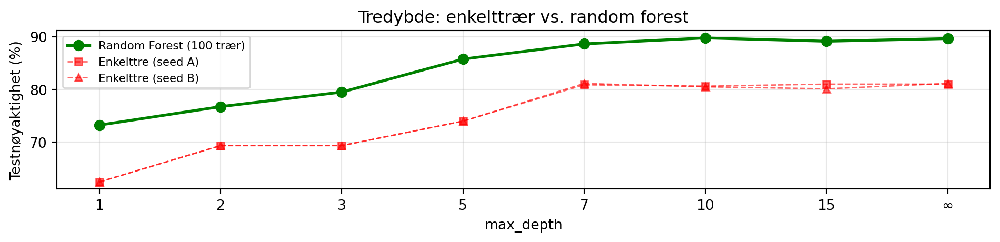
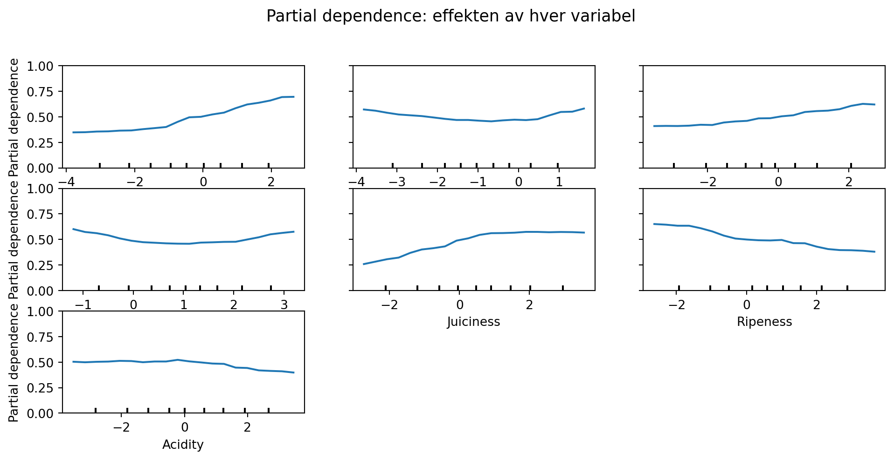

Random Forest og ensemblemetoder
HON2200
Ane Kristine Espeseth
Blokk 1: Forberedelsene
Koding av tekstdata og evaluering av prediksjoner.
§1 — Hva husker dere fra sist?
Diskuter med sidemannen (1 minutt): Forrige gang trente vi et beslutningstre på eplekvalitet. Vi kjørte det seks ganger med ulike tilfeldige splitter. Hva skjedde?
Treet endrer seg hver gang vi deler dataene annerledes.
§2 — Sklearn godtar bare tall
Eple-datasettet har bare tallverdier, men mange datasett har tekstkolonner som sklearn ikke godtar.
| Størrelse | Farge | Kvalitet | |
|---|---|---|---|
| 0 | 7.2 | rød | god |
| 1 | 5.1 | grønn | god |
| 2 | 8.4 | rød | dårlig |
| 3 | 6.0 | gul | god |
| 4 | 4.3 | grønn | dårlig |
Størrelse er et tall. Farge og Kvalitet er tekst. Tekstkolonner må oversettes til tall før sklearn kan bruke dem.
§3 — Det binære tilfellet
Det enkleste: to kategorier → 0 og 1. Dere har sett .astype(int) på en binær kolonne før.
| Quality | quality_num | |
|---|---|---|
| 0 | good | 1 |
| 1 | good | 1 |
| 2 | bad | 0 |
| 3 | good | 1 |
| 4 | good | 1 |
| 5 | bad | 0 |
For to kategorier fungerer dette. Hva med Farge som har tre verdier?
§4 — Ordensfellen
Farge har tre verdier: rød, grønn, gul.
Tip
Gjett: Kan vi bare bruke 0, 1, 2?
Denne oversettelsen forteller modellen at gul > grønn > rød, og at avstanden mellom gul og rød er dobbelt så stor som mellom grønn og rød.
Fargene har ingen naturlig rekkefølge. Å kode dem som ordnede tall legger inn struktur som ikke finnes i dataene.
One-hot encoding
Én kolonne per kategori, bare 0 og 1:
| Farge_grønn | Farge_gul | Farge_rød | |
|---|---|---|---|
| 0 | 0 | 0 | 1 |
| 1 | 1 | 0 | 0 |
| 2 | 0 | 0 | 1 |
| 3 | 0 | 1 | 0 |
| 4 | 1 | 0 | 0 |
§5 — One-hot i praksis
eksempel = pd.DataFrame({
"Farge": ["rød", "grønn", "rød", "gul", "grønn"]
})
pd.get_dummies(eksempel[["Farge"]], prefix="Farge")| Farge_grønn | Farge_gul | Farge_rød | |
|---|---|---|---|
| 0 | 0 | 0 | 1 |
| 1 | 1 | 0 | 0 |
| 2 | 0 | 0 | 1 |
| 3 | 0 | 1 | 0 |
| 4 | 1 | 0 | 0 |
Resultatet er tre nye kolonner, hver med verdien 0 eller 1. Et rødt eple har Farge_rød = 1 og resten lik 0.
§6 — Koding er et tolkningsvalg
One-hot behandler rød, grønn og gul som tre separate, urelaterte kategorier.
Tip
Refleksjon: Hva om kategoriene var nært beslektet, for eksempel «litt rød» og «veldig rød»? One-hot koder dem som helt uavhengige. Er det alltid riktig? Kan dere komme på et eksempel der valg av koding ville endre hva modellen lærer?
§7 — Hva skjuler .score()?
Dere har alle sett denne koden:
Tip
Gjett: .score() gir ett tall tilbake. Hva tror dere skjer inni denne funksjonen?
§8 — To separate steg
Her er hva .score() gjør:
# Steg 1: modellen lager gjetninger, én per eple
prediksjoner = tre_modell.predict(X_test)
# Steg 2: en separat funksjon sammenligner gjetningene med fasit
accuracy_score(y_test, prediksjoner)0.74accuracy_score tar inn to lister (fasit og prediksjoner) og teller hvor mange elementer som er like.
§9 — Tre kilder, samme funksjon
log_modell = LogisticRegression(max_iter=1000).fit(X_train, y_train)
pred_tre = tre_modell.predict(X_test)
pred_log = log_modell.predict(X_test)
pred_alt = np.zeros(len(y_test), dtype=int) # "alle epler er dårlige"
print(f"Beslutningstre: {accuracy_score(y_test, pred_tre)*100:.1f}%")
print(f"Logistisk regresjon:{accuracy_score(y_test, pred_log)*100:.1f}%")
print(f"«Alle er dårlige»: {accuracy_score(y_test, pred_alt)*100:.1f}%")Beslutningstre: 74.0%
Logistisk regresjon:75.4%
«Alle er dårlige»: 50.1%Alle tre linjene kaller accuracy_score med samme y_test og tre ulike prediksjonslister.
§10 — Nøyaktighetsparadokset
Den siste linjen bruker np.zeros() som prediksjoner: «alle epler er dårlige», uten noen modell. Med omtrent like mange gode og dårlige epler i testsettet gir dette ~50 % nøyaktighet.
Tip
Gjett: I obligen jobber dere med Titanic-data der mer enn 50% av passasjerene omkom. Hvor høy nøyaktighet får en modell som alltid predikerer «død»?
y_titan = np.array([0]*62 + [1]*38) # si at 62 døde, 38 overlevde
pred_alle_dør = np.zeros(100, dtype=int) # "alle 100 dør"
print(f"Nøyaktighet for «alle dør»: {accuracy_score(y_titan, pred_alle_dør)*100:.0f}%")Nøyaktighet for «alle dør»: 62%62 % nøyaktighet uten noen modell. En modell som får 78 % er da bare 16 prosentpoeng bedre enn ren gjetning.
§11 — Samme prediksjoner, ulike spørsmål
Vi kan stille ulike spørsmål om den samme listen med prediksjoner:
print(f"Accuracy: {accuracy_score(y_test, pred_tre)*100:.1f}%")
print(f"Precision: {precision_score(y_test, pred_tre)*100:.1f}%")
print(f"Recall: {recall_score(y_test, pred_tre)*100:.1f}%")Accuracy: 74.0%
Precision: 81.3%
Recall: 62.2%| Mål | Spørsmål |
|---|---|
| Accuracy | Hvor mange fikk du riktig totalt? |
| Precision | Av dem du sa var gode, hvor mange var faktisk gode? |
| Recall | Av de faktisk gode, hvor mange fant du? |
Prediksjonene og modellen er de samme i alle tre tilfellene. Det som endres er hvilken type feil vi fokuserer på.
§12 — Forvirringsmatrisen
Alle tre tallene over beregnes fra den samme tabellen:
Predikert: dårlig Predikert: god
Faktisk dårlig 344 riktig 57 FEIL
(sa dårlig, (sa god,
var dårlig) var dårlig)
Faktisk god 151 FEIL 248 riktig
(sa dårlig, (sa god,
var god) var god)Accuracy = (344 + 248) / 800 = 74 %Accuracy summerer diagonalen (de riktige). De to cellene utenfor diagonalen er de to feiltypene.
§13 — To typer feil
De to feiltypene:
151 gode epler som modellen sa var dårlige (false negatives)
57 dårlige epler som modellen sa var gode (false positives)Huskeregel: ordene beskriver hva modellen sa, ikke hva eplet var. False positive betyr at modellen var positiv (sa «god»), men tok feil.
Tip
Diskuter med sidemannen (1 minutt): Dere sorterer epler for salg. Hvilken feil er verst: false negatives eller false positives? Hva betyr disse begrepene i eplesalg-praksis?
Hvordan ville dere oversatt dette til Titanic-datasettet hvor vi predikerer overlevelse?
Blokk 2: Skogen
Fra enkelttrær til ensemblemetoder.
§13b — Tilbake til treet
I §1 så vi dette:

Vi har nå verktøy for å evaluere prediksjoner. Problemet fra forrige gang gjenstår: treet endrer seg med dataene.
§14 — To typer prosesser
Noen prosesser er steg-for-steg: én aktør tar beslutninger i rekkefølge. I et beslutningstre kommer data inn, treet stiller spørsmål og hvert datapunkt følger én sti fra rot til blad. En oppskrift, en for-løkke og en sorteringsalgoritme er også steg-for-steg.
Andre prosesser er mange-samtidig: mange aktører handler uavhengig, og det samlede resultatet har egenskaper ingen enkeltaktør har. Trafikkork oppstår uten at én sjåfør bestemmer seg for å lage kø. Wikipedia-artikler blir pålitelige fordi tusenvis av redaktører retter uavhengig av hverandre.
Tip
Diskuter med sidemannen (1 minutt): Kan dere komme på et annet eksempel der mange middelmådige bidrag gir et godt samlet resultat?
§14b — Gelébønnene
Tip
Gjett: 100 mennesker gjetter antall gelébønner i et glass. Vil gjennomsnittet være bedre eller dårligere enn den beste enkeltgjetningen?
Feilene går i ulike retninger. Gjennomsnittet av mange uavhengige gjetninger slår som regel de fleste individuelle. Dette er en mange-samtidig-prosess: det samlede resultatet har egenskaper ingen enkeltgjetter har.
§15 — Mange middelmådige trær
En random forest består av mange beslutningstrær. Hvert tre klassifiserer hvert datapunkt på egen hånd, fra rot til blad, og gir sitt eget endelige svar. Skogen samler svarene og returnerer det svaret flest trær ga.
Hvert enkelt tre er middelmådig alene. Fordi trærne gjør ulike feil, er flertallssvaret mer nøyaktig enn noe enkelt tre.
Tip
Gjett: Hva ville skjedd om alle trærne fikk nøyaktig samme data og samme features?
De ville gitt identiske svar. For at flertallet skal hjelpe, må trærne gjøre ulike feil.
§16 — Juryanalogien
graph TD
A["🌳 Tre 1<br>Trent på utvalg A"] -->|god| V((Stemme))
B["🌳 Tre 2<br>Trent på utvalg B"] -->|dårlig| V
C["🌳 Tre 3<br>Trent på utvalg C"] -->|god| V
V --> R["✅ Flertall: god<br>(2 mot 1)"]
style R fill:#ccf,stroke:#333,stroke-width:2px
Hvert tre vurderer saken på egen hånd og leverer sin egen dom. Skogen teller opp dommene og returnerer flertallet.
En ekte jury diskuterer seg frem til enighet, mens trærne aldri kommuniserer. Uavhengige feil kansellerer hverandre fordi de går i ulike retninger. Korrelerte feil (som i en jury der medlemmene påvirker hverandre) gjør det ikke.
§16b — Korrelerte vs. uavhengige feil
Tip
Gjett: Tenk deg to scenarier: (A) 100 mennesker leser samme avisartikkel og stemmer over hva den handler om. (B) 100 mennesker leser ulike avisartikler og stemmer over dagens viktigste nyhet. Hvilken avstemning har mest nytte av flertall?
I scenario A er feilene korrelerte: alle leste det samme, så de bommer på samme måte. I scenario B er feilene uavhengige: ulike kilder gir ulike blindsoner. Random forest er scenario B. Hvert tre ser ulike data og stiller ulike spørsmål.
§17 — To kilder til tilfeldighet
Hvert tre får litt ulike data og litt ulike spørsmål. Trærne gjør derfor ulike feil, og feil som peker i ulike retninger kansellerer hverandre i flertallsavstemningen.
1. Tilfeldig datautvalg (bootstrap)
Hvert tre trekker et utvalg med tilbakelegging: samme eple kan dukke opp flere ganger. Ulike utvalg gir ulike feil.
2. Tilfeldig feature-utvalg
Ved hvert splittepunkt velger treet blant en tilfeldig håndfull features. Ulike features gir ulike splitt.
Obs: «tilfeldig» betyr her kontrollert stokastisk utvalg, reproduserbart med
random_state. (eng: random)
§18 — Fra konsept til kode
from sklearn.ensemble import RandomForestClassifier
skog = RandomForestClassifier(n_estimators=100, max_features="sqrt", random_state=42)
skog.fit(X_train, y_train)
print(f"Ferdigtrent skog med {skog.n_estimators} trær, max_features={skog.max_features}")Ferdigtrent skog med 100 trær, max_features=sqrtn_estimators bestemmer antall trær. max_features bestemmer hvor mange features hvert tre vurderer ved hvert splittepunkt (standard: √antall features).
prediksjoner = skog.predict(X_test)
nøyaktighet = skog.score(X_test, y_test)
print(f"Nøyaktighet: {nøyaktighet*100:.1f}%")Nøyaktighet: 89.6%Når du kaller .predict(), klassifiserer hvert av de 100 trærne hvert eple fra rot til blad og gir sitt eget svar. Skogen samler de 100 svarene og returnerer flertallet. .score() sammenligner med fasit, akkurat som i Blokk 1.
§18b — Hjelper tilfeldigheten egentlig?
Tip
Gjett: Vi lager to skoger med 100 trær hver. Den ene bruker tilfeldig feature-utvalg (standard). Den andre lar hvert tre bruke alle features. Hvilken tror dere er best?
skog_med = RandomForestClassifier(n_estimators=100, random_state=42)
skog_uten = RandomForestClassifier(n_estimators=100, max_features=None, random_state=42)
skog_med.fit(X_train, y_train)
skog_uten.fit(X_train, y_train)
print(f"Med tilfeldig feature-utvalg: {skog_med.score(X_test, y_test)*100:.1f}%")
print(f"Uten tilfeldig feature-utvalg: {skog_uten.score(X_test, y_test)*100:.1f}%")Med tilfeldig feature-utvalg: 89.6%
Uten tilfeldig feature-utvalg: 89.8%Mer tilfeldighet gir mer uavhengige feil og bedre flertallsavstemning.
§19 — Svake læringsmodeller (weak learners)
Hvert enkelt tre kalles en svak læringsmodell (weak learner): en modell som er bare litt bedre enn tilfeldig gjetning. Treet er bevisst begrenset i dybde og features. Begrensningen er et designvalg: skogen trenger ulike trær, og begrensede trær som ser ulike data gjør ulike feil.
Tip
Gjett: Vi kan gå fra 1 tre til 3 til 100 til 500. Skisser i hodet: nøyaktighet som funksjon av antall trær. Stiger den hele tiden, flater den ut, eller går den opp og ned?
§19b — Hvor svake skal trærne være?
Tip
Gjett: Vi varierer max_depth for 100 trær i en random forest. Stiger nøyaktigheten hele veien, eller finnes det et optimalt punkt?

En skog med max_depth=1 (de svakeste trærne) er allerede like god som et enkelttre med dybde 5. Flertallsavstemning og tilfeldig feature-utvalg kompenserer for individuell svakhet.
§20 — Hvor mange trær trengs?

§20b — Kurven flater ut
Kurven stiger bratt med de første trærne og flater ut etter ca. 50. Kurven går aldri ned: hvert nytt tre bidrar med uavhengige feil, og det kan bare hjelpe eller være nøytralt.
Sammenlign med max_depth-kurven fra forrige gang: mer dybde ga dårligere testresultat etter et punkt. Flere trær gir avtakende forbedring og aldri forverring. Kan du forklare forskjellen?
§21 — Feature importance

Tip
Gjett: Den øverste variabelen har høyest importance. Betyr det at den forårsaker god eplekvalitet?
§21b — Importance er ikke kausalitet
Feature importance viser hvor mye modellen støttet seg på hver variabel. Den sier ingenting om årsak og virkning.
I lineær regresjon betyr en koeffisient på 2.5 at variabelen bidrar med 2.5 per enhet. Feature importance viser hvor ofte modellen brukte variabelen, uten retning eller størrelse.
Egenskaper med mange unike verdier får oppblåst importance, og korrelerte egenskaper deler importance mellom seg.
§22 — Partial dependence
Feature importance viser hvilke variabler modellen bruker mest, men ikke retning: gjør høyere søthet eplet «godt» eller «dårlig»?
Partial dependence svarer på dette, som et kontrollert eksperiment: vi endrer én variabel og holder alt annet fast.
- Sett søtheten til −3 for alle eplene (behold alt annet), kjør prediksjoner, noter gjennomsnittet
- Gjenta for −2, −1, 0, 1, 2, 3 …
- Plott gjennomsnittlig prediksjon mot søthet
§23 — Hva viser kurven?
Tip
Gjett: Tror dere partial dependence-kurven for søthet stiger, synker, eller er flat?
§24 — PDP for den viktigste variabelen

from sklearn.inspection import PartialDependenceDisplay
PartialDependenceDisplay.from_estimator(skog, X_test, features=["Sweetness"])Tip
Les kurven: Ved hvilken verdi skifter modellen? Er overgangen brå eller gradvis?
§25 — PDP for alle variabler

§26 — Modellvalg avhenger av formålet
Vi bruker «modell» om fire ulike ting her. Alle fire forenkler virkeligheten, på helt ulike måter.
Et sykehus vil bruke en modell til å prioritere pasienter. Her er avveiningene:
| Modell | Hva du kan se | Hva du gir opp |
|---|---|---|
| Lineær regresjon | Koeffisienter: nøyaktig bidrag per variabel | Antakelse om rette linjer |
| Logistisk regresjon | Koeffisienter + sannsynligheter | Antakelse om lineære grenser |
| Beslutningstre | Hele beslutningsstien for hvert datapunkt | Ustabilt: annen splitt gir annet svar |
| Random Forest | Generell logikk (importance + PDP) | Enkeltprediksjoner er vanskelige å forklare |
§27 — Hvilken modell for sykehuset?
Tip
Diskuter med sidemannen (2 minutter):
- Hvilken feiltype er farligst her: false positive eller false negative?
- Må legen kunne forklare svaret til pasienten?
- Basert på svarene: hvilken modell passer best?
«Best» avhenger av formålet, og valget kan begrunnes.
§28 — Valg vi tok i dag
I dag har vi tatt en rekke valg som påvirker hva modellen lærer og hva vi kan konkludere:
- Vi valgte one-hot encoding over ordinal koding, noe som endrer hvilke mønstre modellen kan finne
- Vi brukte nøyaktighet som evalueringsmål, som kan gi et misvisende bilde for ubalanserte data
- Vi leste feature importance som variabelbidrag, et utsagn om modellens bruk av variablene
- Vi satte antall trær til 100, og kurven viste avtakende utbytte uten forverring
Hva ville endret seg om vi hadde valgt annerledes på ett av disse punktene?
§29 — Oppsummering
| Konsept | Hva det gjør |
|---|---|
| One-hot encoding | Oversetter kategorier til binære kolonner sklearn forstår |
.predict() → evaluering |
Modell lager prediksjoner, evalueringsfunksjon bedømmer dem uavhengig |
| Forvirringsmatrise | Viser hvilke feil modellen gjør, ikke bare hvor mange |
| Svak læringsmodell | Ett enkelt tre, middelmådig alene |
| Random Forest | Mange svake trær med tilfeldig data og features, flertallsavstemning |
| Feature importance | Hvilke variabler modellen bruker mest (ikke retning, ikke kausalitet) |
| Partial dependence | Hvordan en variabel påvirker prediksjonen (gjennomsnittlig) |
§30 — Obligen
I oppgave 4 skal dere bruke det vi har gått gjennom i dag: random forest, feature importance og partial dependence.
Husk å one-hot-kode kategoriske variabler før dere trener modellen.
Important
Oblig: frist 19. mars. Orakeltimer hver torsdag i Tellefsens tårn, kl. 16:15–18:00.